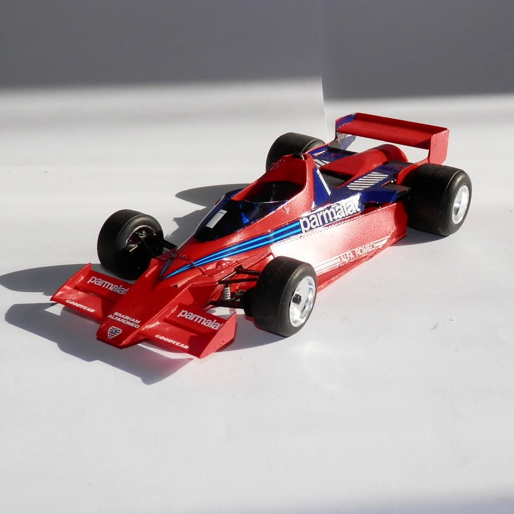
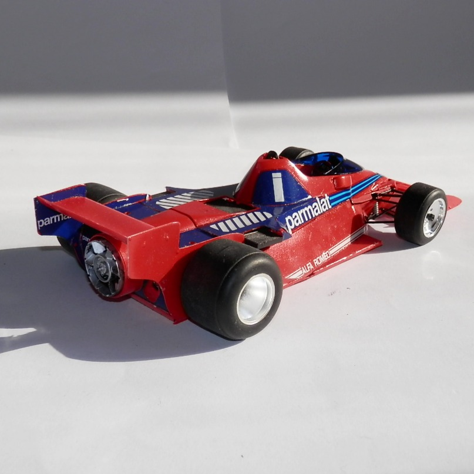

Auto e veicoli stradali · scale model archive
Brabham BT46B
Brabham BT46B — Kit: Hasegawa, Scale: 1/24. Fan car, F1 Swedish GP Anderstorp 17 June 1978, first race first win then banned

Photo gallery

English description
Fan car, F1 Swedish GP Anderstorp 17 June 1978, first race first win then banned
Descrizione italiana
Fan car, GP di Svezia F1 ad Anderstorp, 17 giugno 1978: prima gara, prima vittoria, poi bandita.